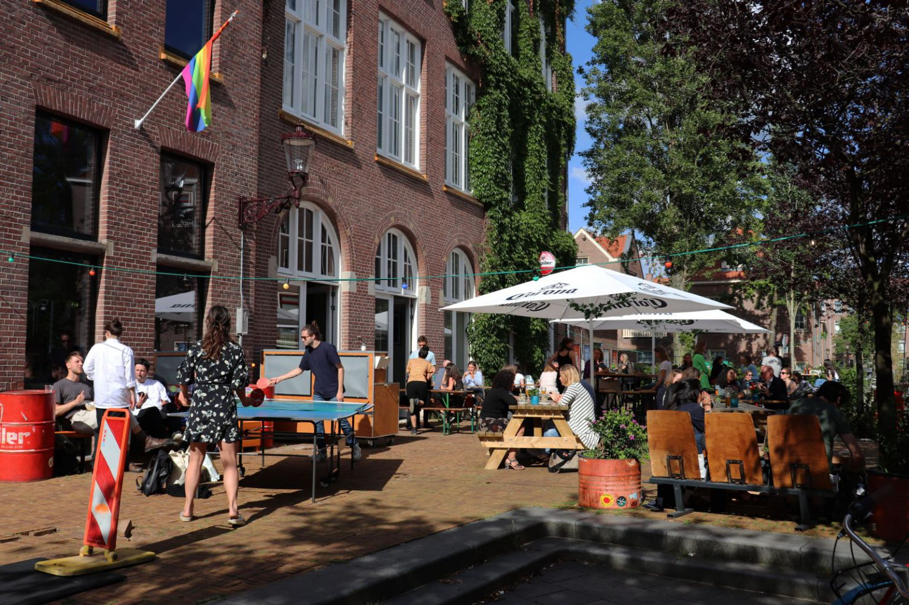

Kalender
Films


SPECIALS SEPTEMBER + OKTOBER: CINEMA /KULINAIR
Is het oog groter dan de maag? Breng de twee samen. Deze herfst staat de speciale programmering bij Studio/K in het teken van eten en eetcultuur. Een vette hap op de bank of een vijfgangendiner, de raffiniteit zelve, Romeinse decadentie ten top of een visstick onder Tl-licht, elke maaltijd heeft zo zijn waarde. Voed het oog met imposante scènes vol geuren en kleuren. Zet je tanden in stimulerende verhalen over mensen en hun relatie met voedsel en elkaar. Mocht je honger hebben gekregen van wat zich op het scherm afspeelt, kun je natuurlijk ook genieten van een heerlijke maaltijd in ons restaurant. Cinema /Kulinair is deze herfst de speciale programmering. In oktober en november kun je alvast uitkijken naar films om je vingers bij af te likken. Deze maanden draaien we: Fellini Satyricon (1968), Big Night (1996), The Lunchbox (2013), Lo Sono L’Amore (2009), La Grande Bouffe (1973) en Eat Drink Man Woman (1994)


CAFÉ & RESTAURANT
Kom onze heerlijke vegetarische, veganistische, vis of vlees gerechten van de lunch- en dinerkaart proeven. Bereid met seizoensproducten door ons eigen studententeam. De lunchkaart is geopend van 12.00 - 16.00. De borrelkaart is geopend van 12.00 - 22.00. De dinerkaart is geopend van 18.00 - 22.00.